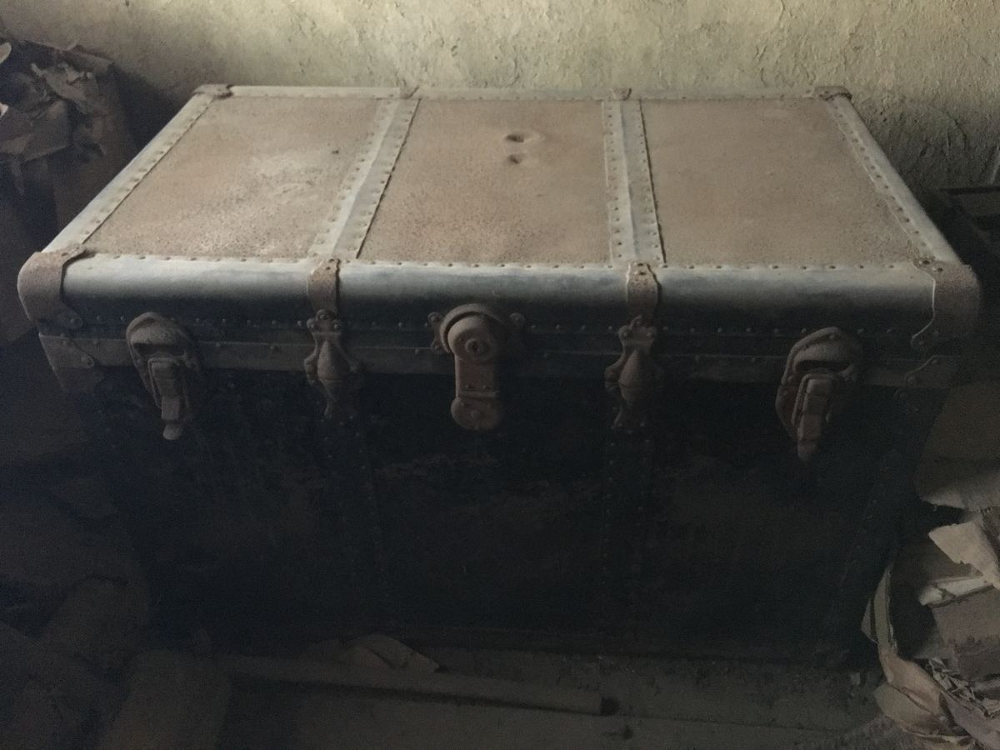
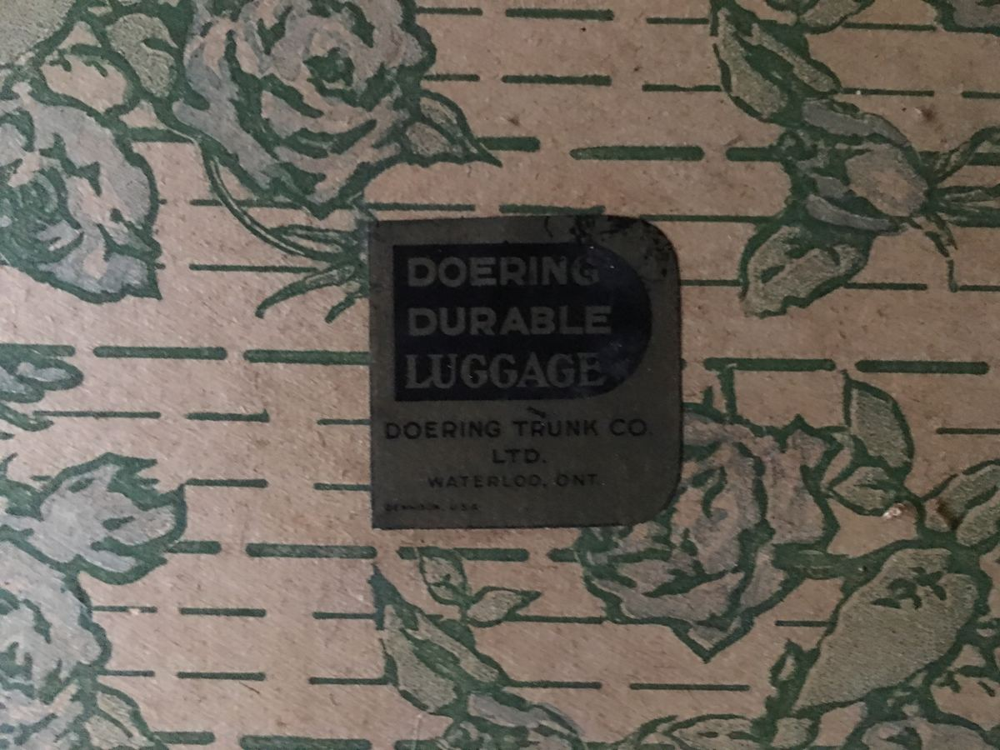
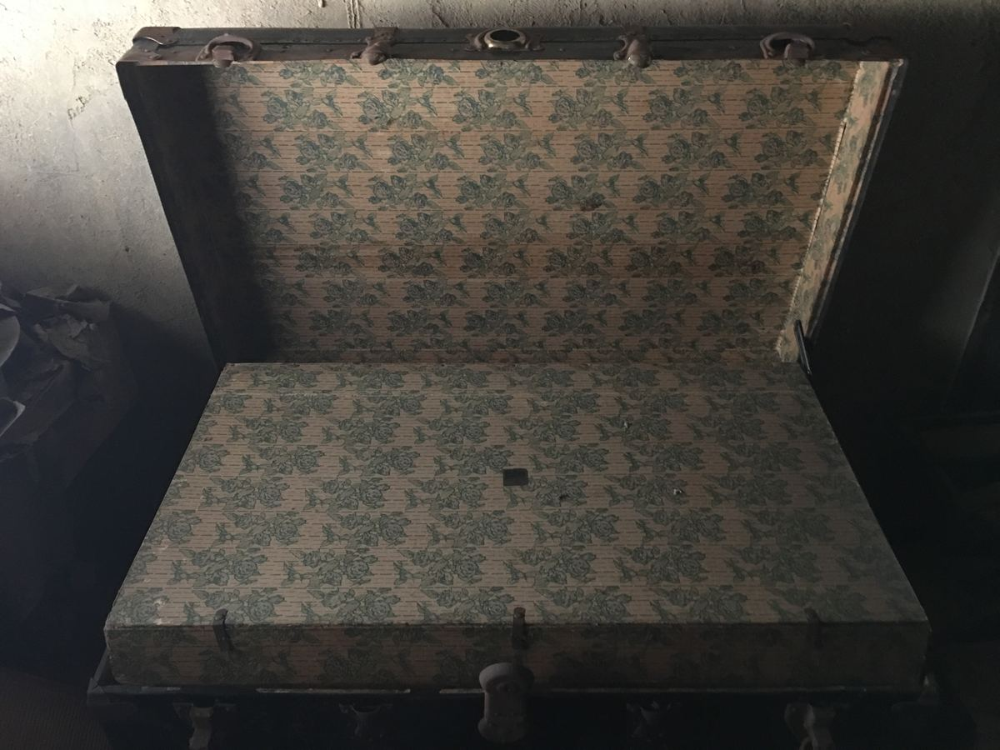
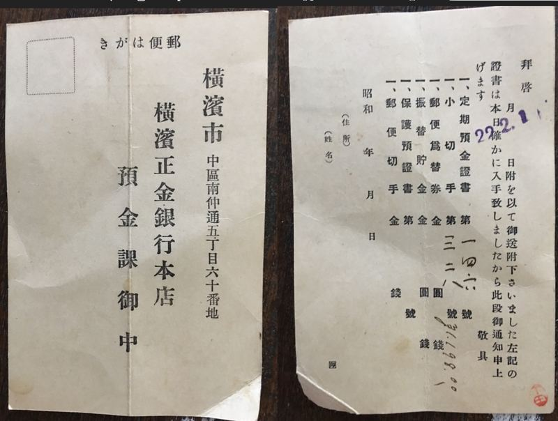
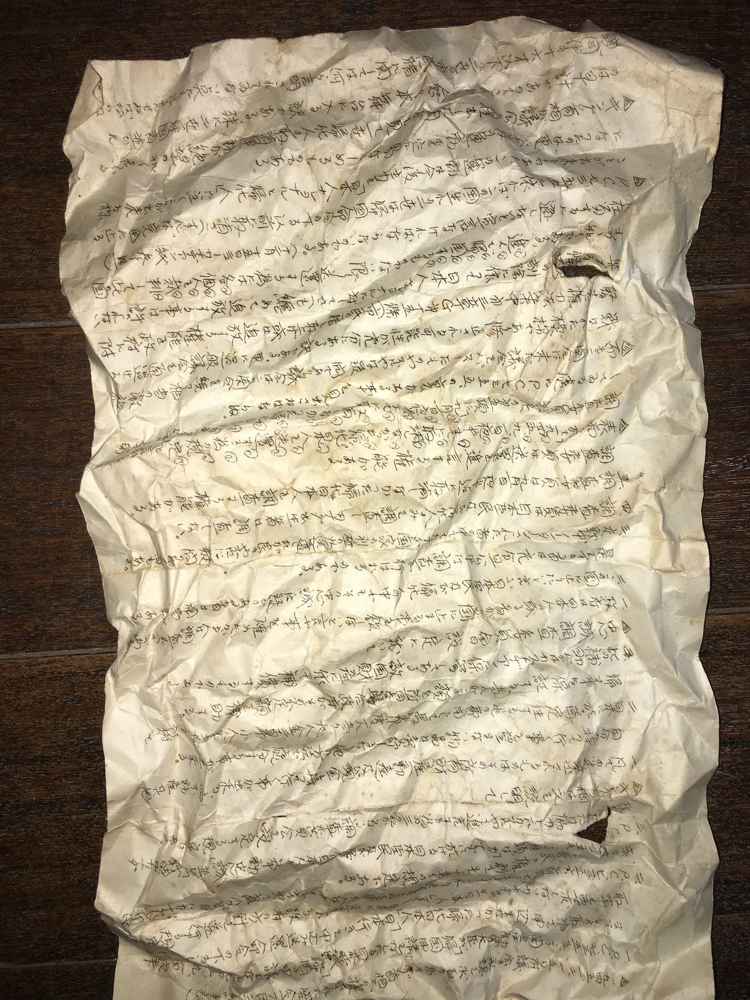
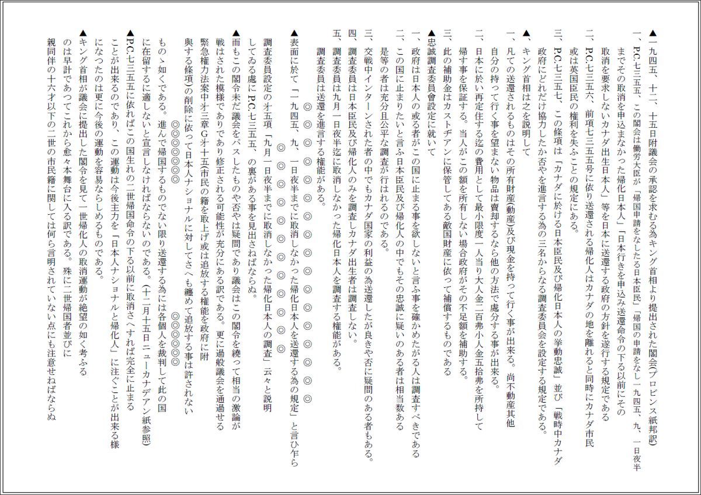
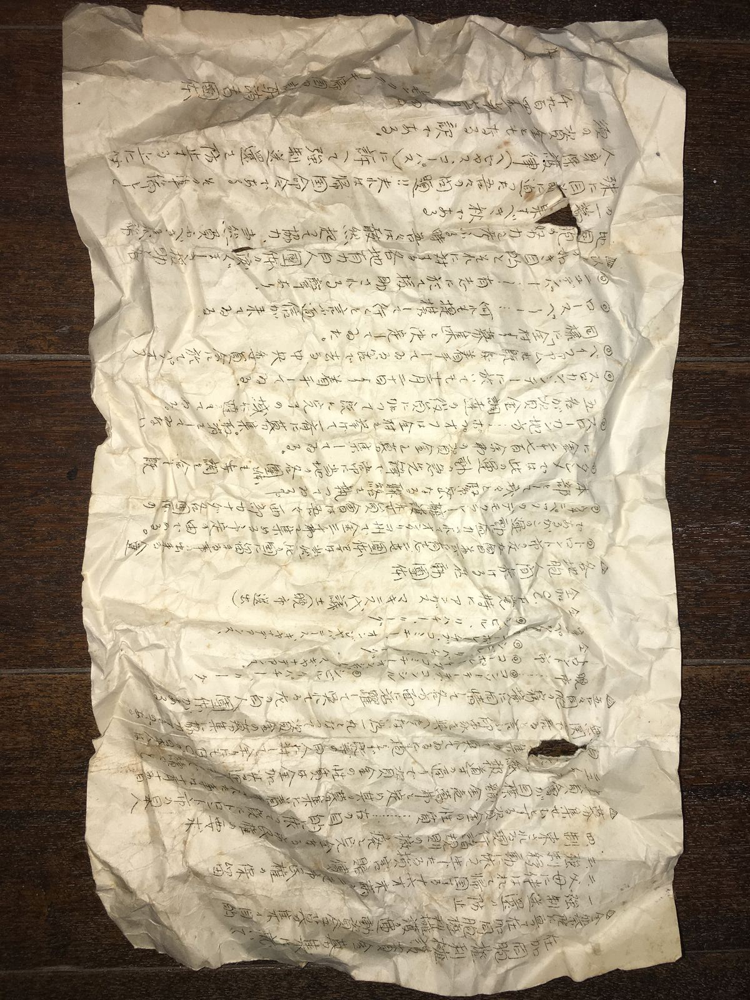
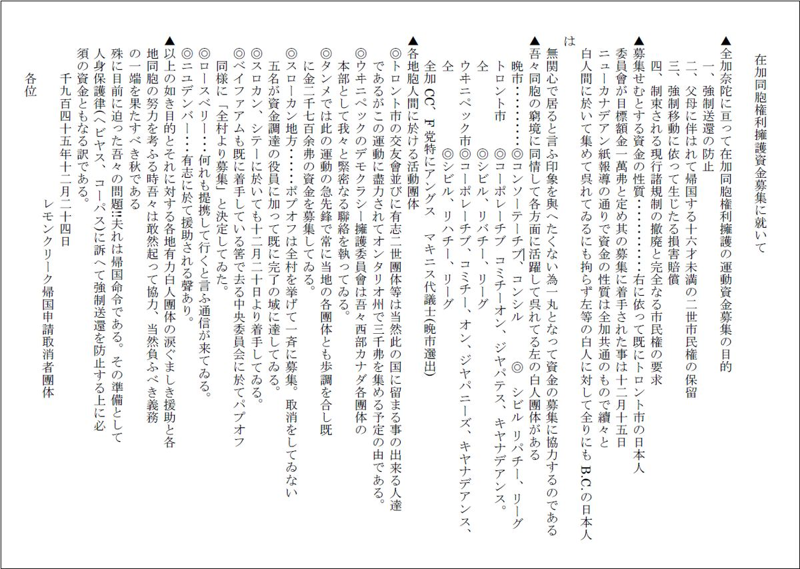
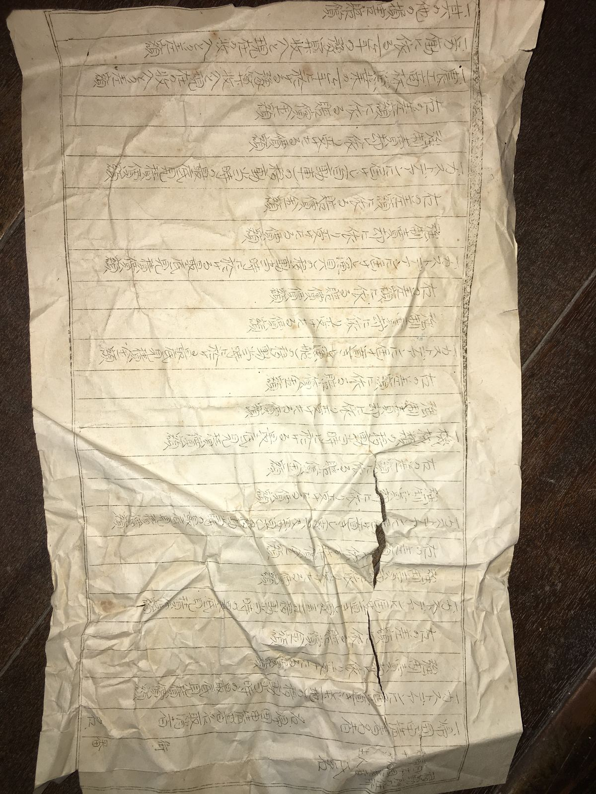
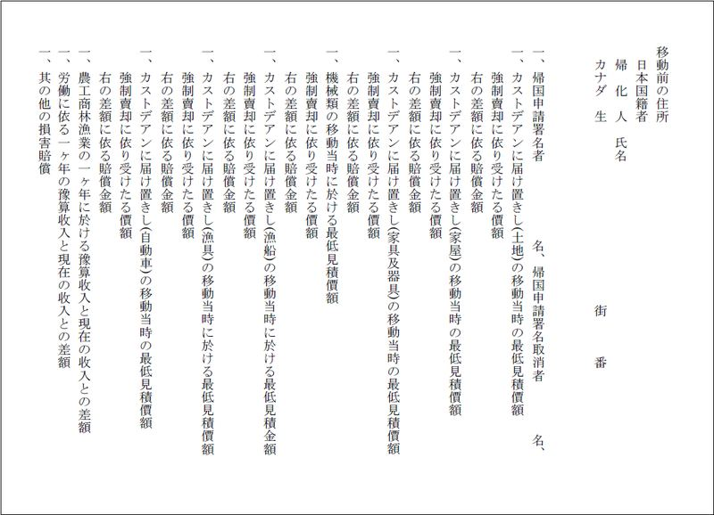

日系移民をめぐって
戦後の日系カナダ人 — 佐島根岸邸3通の文書
佐島・根岸邸の屋根裏に大きなトランクがありました。
明治末年にバンクーバー郊外に移民していた家です。トロンコと呼んでいたそうです。
中にはセーター、ワンピース、着物や端切れが少し。そしてくしゃくしゃに丸められた紙が3枚ありました。
お借りして家で読み解いたところ、このような文書でした。
・戦後、日系カナダ人の強制送還措置に関するカナダ政府閣議決定抄訳（1945年12月15日）
・日系カナダ人の権利擁護運動資金募集の件（1945年12月24日）
・戦時に強制売却させられた資産等に対し賠償請求を行うための目録フォーム
カナダの日系人も第二次大戦前後に塗炭の苦しみを味わいました。根岸家の方は強制送還により帰国されたのでしょうか。
くしゃくしゃに丸められ、それでも捨てられなかった3枚の紙に歴史を感じます。
運動資金募集の紙を読むと、カナダの複数の白人団体が日系人支援に取り組んでいることが判ります。
最近になり、ロバート汐見もシカゴを中心とした日系人排斥反対団体の尽力で早い段階で強制収容所を退去したと思われる資料が見つかりました。
アメリカやカナダ全土が日系人排斥に流れたのではなく、戦時にあっても多様な意見を許容していた両国の民主主義の懐の深さに感銘を受けます。
また、少数派であったろう白人の日系人支援団体のご尽力には感謝の念を禁じ得ません。

重厚なトロンコ。一般にはスチーマートランクと言われ、1870年代から1920年代に汽船や蒸気機関車での長旅に使われたそうです。




日系カナダ人の強制送還措置に関するカナダ政府閣議決定抄訳（書き起こし）





記録のため、テキスト全文を記載します。（旧字体です。）
＜日系カナダ人の強制送還措置に関するカナダ政府閣議決定抄訳＞
▲一九四五、十二、十五日附議会の承認を求むる為キング首相より提出された閣会(プロビンス紙邦訳)
一、P.C.七三五五、この閣会は働労大臣が「帰国申請をなしたる日本臣民」「帰国の申請をなし一九四五、九、一日夜半までその取消を申込まなかった帰化日本人」「日本行きを申込み送還命令の下る以前にその取消を要求しないカナダ出生日本人」等を日本に送還する政府の方針を遂行する規定である
二、P.C.七三五六、前項七三五五号に依り送還される帰化人はカナダの地を離れると同時にカナダ市民或は英国臣民の権利を失ふことの規定にある。
三、P.C.七三五七、この條項は「カナダに於ける日本臣民及び帰化日本人の挙動忠誠」並び「戦時中カナダ政府にどれだけ協力したか否やを進言する為の三名からなる調査委員会を設定する規定である。
▲、キング首相は之を説明して
一、凡ての送還されるものはその所有財産(動産)及び現金を持って行く事が出来る。尚不動産其他自分の持って行く事を望まない物品は賣却するなら他の方法で處分する事が出来る。
二、日本に於い再定住する迄の費用として最小限度一人当り大人金二百弗小人金五拾弗を所持して帰す事を保証する。当人がこの額を所有しない場合政府がその不足額を補助する。
三、此の補助金はカストヂアンに保管してある敵国財産に依って補償するものである
▲忠誠調査委員會設定に就いて
一、政府は日本人の或る者がこの国に止まる事を欲しないと言ふ事を確かめたがる人は調査すべきである
二、この国に止まりたいと言ふ日本臣民及び帰化人の中でもその忠誠に疑いのある者は相当数ある
是等の者は充分且公平な調査が行はれるのである。
三、交戦中インターンされた者の中でもカナダ国家の利益の為送還したが良きや否に疑問のある者もある。
四、調査委員は日本臣民及び帰化人のみを調査しカナダ出生者は調査しない。
五、調査委員は九月一日夜半迄に取消しなかった帰化日本人を調査する権能がある。
調査委員は送還を進言する権能がある。
▲表面に於て「一九四五、九、一日夜半までに取消しなかった帰化日本人を送還する為の規定」と言ひ乍ら調査委員設定の㐧五項「九月一日夜半までに取消しなかった帰化日本人の調査」云々と説明してゐる處にP.C.七三五五、の裏がある事を見出さねばならぬ。
▲而もこの閣令未だ議会をパスしたものや否やは疑問であり議会はこの閣令を繞って相当の激論が戦はされた模様でありであり修正される可能性が充分にある訳である。更に過般議会を通過せる緊急権力法案中㐧三章Ｇ㐧十五(市民の籍を取上げ或は追放する権能を政府に附與する條項)の削除に依って日本人ナショナルに対してさへも纏めて追放する事は許されないものゝ如くである。進んで帰国するものでない限り送還する為には各個人を裁判して此の国に在留するに適しないと宣言しなければならないのである。(十二月十五日ニューカナデアン紙参照)
▲P.C.七三五五に依ればこの国生れの二世帰国命令の下る以前に取消さへすれば完全に止まることが出来るのであり、この運動は今後主力を「日本人ナショナルと帰化人」に注ぐことが出来る様になつたのは更に今後の運動を容易ならしめるものである。
▲キング首相が議会に提出した閣令を見て一世帰化人の取消運動が絶望の如く考ふるのは早計であつてこれから愈々本舞台に入る訳である。殊に二世帰国者並びに親同伴の十六才以下の二世の市民籍に関しては何ら言明されていない点にも注意せねばならぬ
＜在加同胞権利擁護資金募集に就いて＞
▲全加奈陀に亘って在加同胞権利擁護の運動資金募集の目的
一、強制送還の防止
二、父母に伴はれて帰国する十六才未満の二世市民権の保留
三、強制移動に依って生じたる損害賠償
四、制束される現行諸規制の撤廃と完全なる市民権の要求
▲募集せむとする資金の性質････････････右に依って既にトロント市の日本人委員會が目標額金一萬弗と定め其の募集に着手された事は十二月十五日ニューカナデアン紙報導の通りで資金の性質は全加共通のもので續々と白人間に於いて集めて呉れてゐるにも拘らず左等の白人に対して全りにもB.C.の日本人は無関心で居ると言ふ印象を與へたくない為一丸となって資金の募集に協力するのである
▲吾々同胞の窮境に同情して各方面に活躍して呉れてる左の白人團体がある
晩市･･････････◎コンソーテーチブ、コンシル ◎ シビル リパチー、リーグ
トロント市 ◎コーポレーチブ コミチーオン、ジヤパテス、キヤナデアンス。
仝 ◎シビル、リバチー、リーグ
ウヰニペック市◎コーポレーチブ、コミチー、オン、ジヤパニーズ、キヤナデアンス、
仝 ◎シビル、リハチー、リーグ
全加CC、F党特にアングス マキニス代議士(晩市選出)
▲各地胞人間に於ける活動團体
◎トロント市の交友會並びに有志二世團体等は当然此の国に留まる事の出来る人達であるがこの運動に盡力されてオンタリオ州で三千弗を集める予定の由である。
◎ウヰニペックのデモクラシー擁護委員會は吾々西部カナダ各團体の本部として我々と緊密なる聯絡を執ってゐる。
◎タンメでは此の運動の急先鋒で常に当地の各團体とも歩調を合し既に金二千七百余弗の資金を募集してゐる。
◎スローカン地方･･････ポプオフは全村を挙げて一斉に募集。取消をしてゐない五名が資金調達の役員に加って既に完了の域に達してゐる。
◎スロカン、シテーに於いても十二月二十日より着手してゐる。
◎ベイファアムも既に着手している筈で去る中央委員会に於てパプオフ同様に「全村より募集」と決定してゐた。
◎ロースベリー･･･何れも提携して行くと言ふ通信が来てゐる。
◎ニユデンバー･･･有志に於て援助される聲あり。
▲以上の如き目的とそれに対する各地有力白人團体の涙ぐましき援助と各地同胞の努力を考ふる時吾々は敢然起って協力、当然負ふべき義務の一端を果たすべき秋である
殊に目前に迫った吾々の問題!!夫れは帰国命令である。その準備として人身保護律(ヘビヤス、コーパス)に訴へて強制送還を防止する上に必須の資金ともなる訳である。
千九百四十五年十二月二十四日
レモンクリーク帰国申請取消者團体
＜損害賠償請求目録フォーム＞
移動前の住所
日本国籍者
帰 化 人 氏名
カナダ 生 街 番
一、帰国申請署名者 名、帰国申請署名取消者 名、
一、カストデアンに届け置きし(土地)の移動当時の最低見積價額
強制賣却に依り受けたる價額
右の差額に依る賠償金額
一、カストデアンに届け置きし(家屋)の移動当時の最低見積價額
強制賣却に依り受けたる價額
右の差額に依る賠償金額
一、カストデアンに届け置きし(家具及器具)の移動当時の最低見積價額
強制賣却に依り受けたる價額
右の差額に依る賠償金額
一、機械類の移動当時に於ける最低見積價額
強制賣却に依り受けたる價額
右の差額に依る賠償金額
一、カストデアンに届け置きし(漁船)の移動当時に於ける最低見積金額
強制賣却に依り受けたる價額
右の差額に依る賠償金額
一、カストデアンに届け置きし(漁具)の移動当時に於ける最低見積價額
強制賣却に依り受けたる價額
右の差額に依る賠償金額
一、カストデアンに届け置きし(自動車)の移動当時の最低見積價額
強制賣却に依り受けたる價額
右の差額に依る賠償金額
一、農工商林漁業の一ヶ年に於ける豫算收入と現在の收入との差額
一、労働に依る一ヶ年の豫算收入と現在の收入との差額
一、其の他の損害賠償